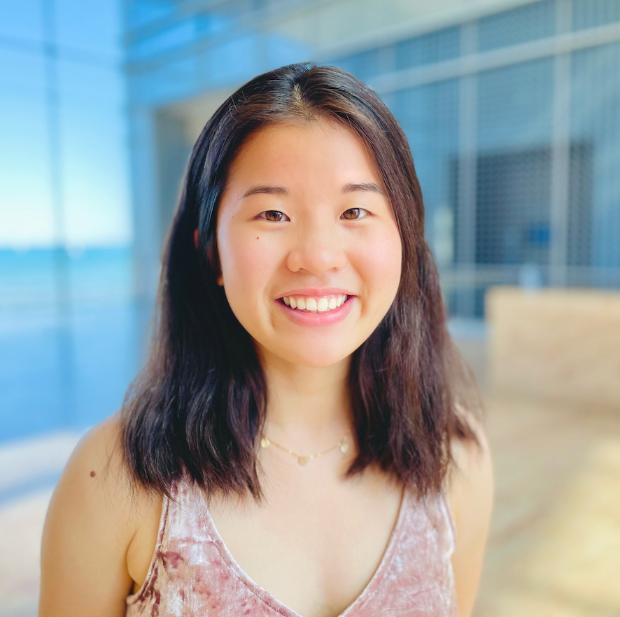
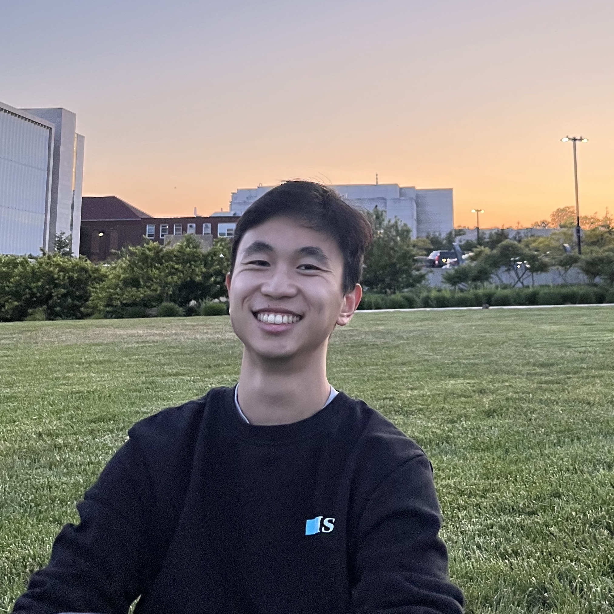
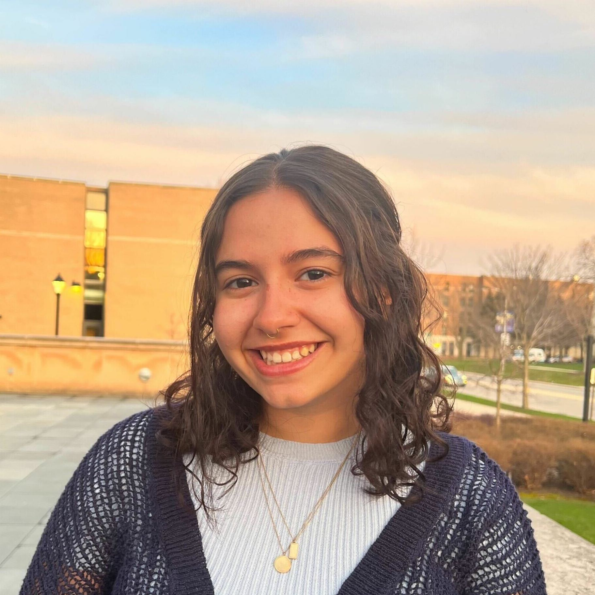
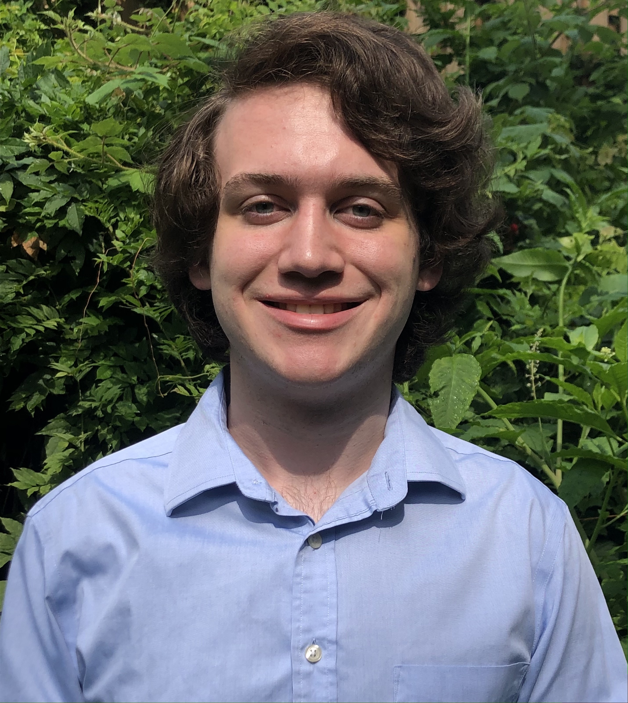
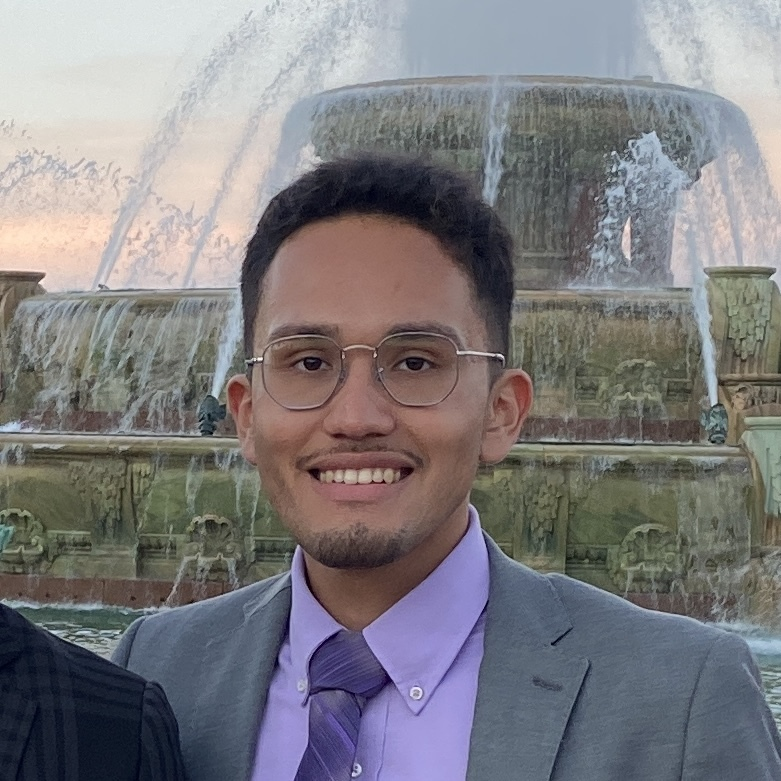
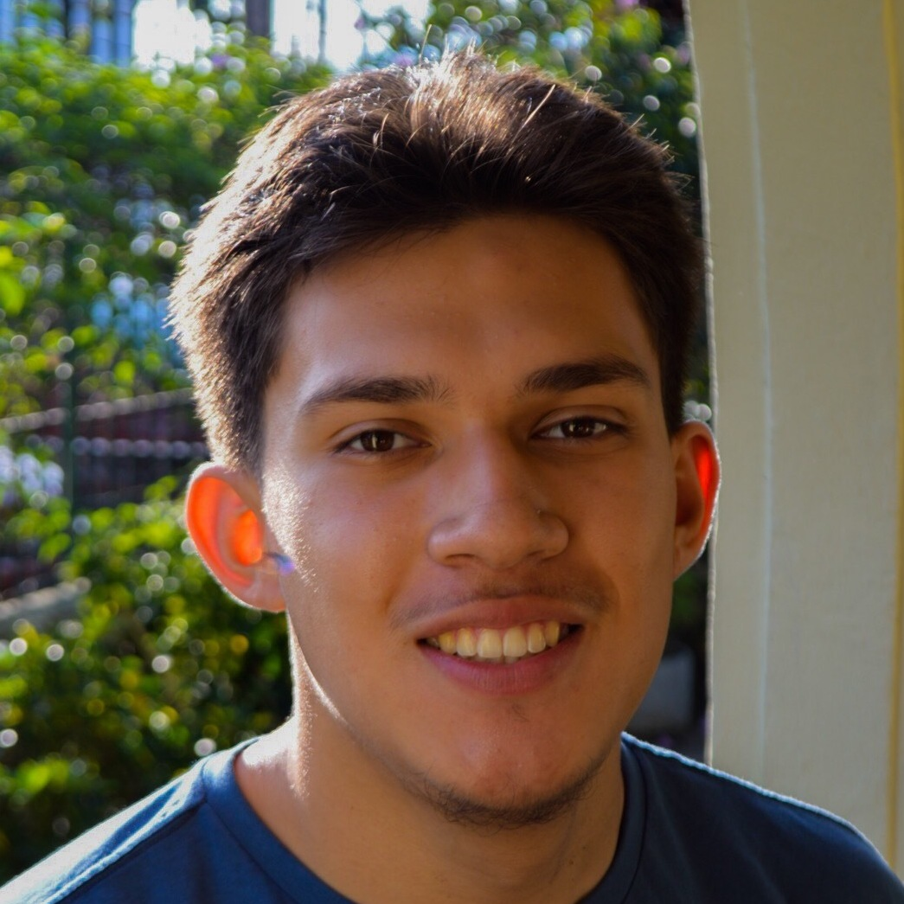

Naomi Wu

Naomi is a senior studying Computer Science and Asian American Studies from Chinatown, Chicago. She is interested in the intersections between social justice and computer science, with particular interest in how education, race, and gender affect accessibility to/within the technology field. In her free time, she enjoys biking, thrifting, and buying little plants. She is part of the MusicNU Team.
Marco Wang

Marco is a second year at Northwestern University from Hong Kong currently studying computer science
and physics in WCAS. He is interested in exploring how machine learning can be applied in education
and related fields. In his free time, he enjoys learning about new technologies, playing squash
and video games. He is currently part of the Blinc team in the lab.
AnnaRose
Hi I’m AnnaRose. I’m a first year computer science major in Weinberg. I’m working on the BLINC project and I’m interested in multimodal learning and using technology to enhance everyday life.
Audrey Benitez
Hi I’m Audrey Benitez (she/her)! I am a sophomore at Northwestern University majoring in computer science in Weinberg. I am interested in ensuring a broader racial and ethnic participation in CS. My focus centers around showing youth connections between computer science and their interests. In the Sportsense team I examine different multimodal tech devices that serve as means to engage computer learning through the lens of sports. Outside of the lab I like to dance, read and go on walks along the lakefill!
Ethan Piñeda

Hey there! My name is Ethan Piñeda and I’m a second-year undergraduate student studying pursuing my Bachelors and Masters in Computer Science at Northwestern University. I currently work within the BLINC project. My research focuses on utilizing multi-modal learning analytics to empower educators and students in the classroom. Outside of my work, I am very passionate in teaching and empowering first-generation and low-income students to pursue higher education and careers in STEAM.
website
Nicole Tartakovsky

Hi I’m Nicole Tartakovsky, and I am a second year undergraduate studying Computer Science in McCormick. I am a member of the SportSense team, and I am passionate about the intersection of machine learning, artificial intelligence, and inclusive learning. In my free time, I love playing tennis, discovering new music, and dancing.
Eugenia Cao

Eugenia Cao is a second-year student majoring in Industrial Engineering and Computer Science. She is currently working on the BLINC project at Tiilt, with a primary focus on integrating discourse analysis into the BLINC system. She appreciates the supportive environment at Tiilt and how its research is closely connected to the local community. When she's not coding, she enjoys all forms of theatre production and photography.
Natalie Cheng

Natalie is a second year student from Hong Kong studying Computer Science and Classics. She’s a member of the MusicNU team and the Multicraft/Gesturecraft team. She is interested in digital design and supporting accessible technology and STEM education in underrepresented groups. In her free time, she loves cooking, climbing, playing the guitar/songwriting, and gaming.
Jannah Issa
Jannah is a Second Year student passionate about the intersection of Cognitive Science and Computer Science with a focus on User Experience (UX) and Interface Design. She is interested in exploring the cognitive benefits of gestures and embodied learning in children and elementary/intermediate educational experiences. In her free time, she enjoys playing soccer, painting, and exploring the city!
Alison Levin

Alison is a Computer Science Masters student. She completed her BA in Computer Science with a minor in Legal Studies at Northwestern University in 2023. She is particularly interested in embedded systems and ad hoc networks. In her free time, Alison is a member of Northwestern’s Synchronized Skating team, the Purple Line. She also works as a figure skating coach and is a coach with Evanston Ice Synchronized Skating Teams.
Zachary McCoy

Zach is a second-year Computer Science student at Northwestern University, complementing his major with a minor in Data Science and an ISEN Undergraduate Certificate in Sustainability and Energy. He is deeply passionate about the intersection of technology and sustainability, particularly through the application of artificial intelligence. His research centers on the role of interactive technology in children's learning, particularly examining how physical interactions and gestures foster cognitive development in early education. Beyond his academic pursuits, Zach is an avid chess player, enjoys bouldering at his local climbing gym, baking, and playing a variety of games.
website
Timothy Fu

Tim is a fifth-year student on the MusicNU team majoring in Computer Science and Clarinet Performance. He is passionate about increasing equity in CS education by crafting immersive tools that involve students’ interests and empower them in their STEM and creative abilities. Beyond TIILT, he enjoys playing basketball (he’s a hometown Warriors fan!), volunteering with nearby schools, and exploring new cultures and cuisines.
Kris Yun

Kris (she/her/hers) is a first-year Computer Science and Social Policy student interested in the intersection between CS, education, and policy. She’s a member of the Multicraft/Gesturecraft team working to create accessible technologies for underrepresented students. Coming from a family of educators, Kris is an avid believer in gamifying education for students. Outside of tilt, she loves to romanticize her playlists, spend time with friends, and bake.
Zoe Lewis

Zoe (she/ her) is a learning sciences undergraduate student concentrating in the design of learning spaces. She is passionate about creating learning opportunities that are equitable and are transformative in nature for students. She is curious about how tech and stem as a whole works into this vision of learning.
Lucas Zurbuchen

Lucas is a fourth year Computer Science and Double Bass Performance student. He works in the BLINC team, doing frontend development and data visualization. He loves when his work can help others, and he is also passionate about exploring intersections between computer science, language, and music. In his free time, he enjoys going on runs, playing Mario games, and expanding his Rubik’s Cube collection.
Ethan M. Chan

Ethan is a third year studying Computer Science at Northwestern with a minor in Data Science and Engineering. He is a member of the data-science and music team, and he is particularly interested in developing tools that augment/gamify the process of learning. Outside of class, he enjoys watching the GS Warriors, learning Mandarin, and playing piano.
Siddhartha Saha
Siddharth is a sophomore from Kolkata, India studying Computer Science in the McCormick School of Engineering. He is passionate about the intersection of technology, social justice, and the environment. In his free time, he likes to discover new music, learn about other cultures, and play with dogs. He is involved with the musicNU project.
John Sánchez

John Sánchez is a third-year computer science student in the McCormick School of Engineering. He is currently in the MultiCraft team where he hopes to develop a scalable multimodal interface system for Minecraft. His work will empower individuals with physical impairments to play and create in the video game. Outside of tiilt, he enjoys going on runs, bike riding and spending time with family!
Danny Pineda

Danny Pineda is a junior studying Computer Science and a member of the MusicNU team. His focus on the team is the front end development and design of the app. He takes pride in contributing to a project that has the potential to enhance the quality of education, especially for underserved communities. When he’s not busy with his responsibilities, he indulges his passions for cooking, weightlifting, and playing the guitar.
Sara Bouftas
Sara is a second-year student majoring in Computer Science. She is a member of the SportSense team where she introduces youth to computer science through sports and multimodal technology. She hopes to make computer science more accessible while empowering youth in their STEM abilities. Outside of TIILT, she enjoys playing basketball and exploring Chicago!